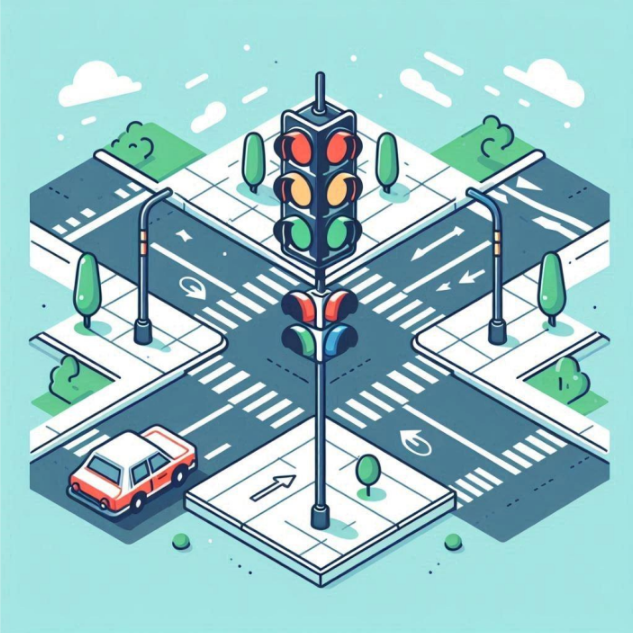
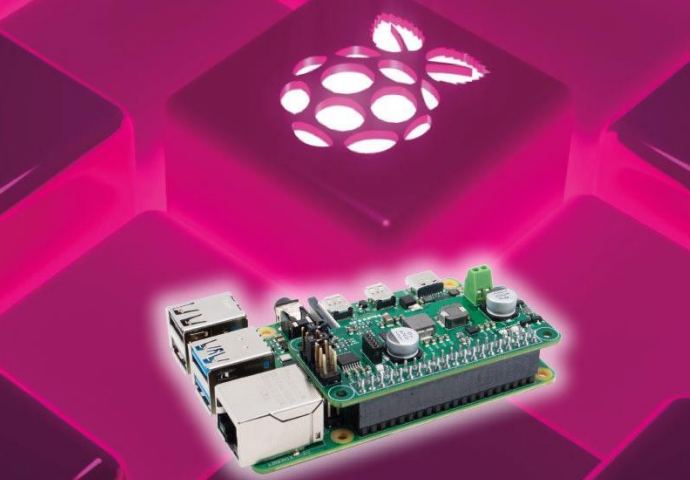

due semafori composti ognuno da un led rosso, giallo e verde. Uno avrà il normale
funzionamento in quanto sarà per le macchine e invece l’altro sarà dedicato ai pedoni. Quello dei pedoni non
avrà il normale funzionamento, ma sarà sempre rosso finche non lo si prenota, cioè si clicca un pulsante.
Allora l’altro diventerà rosso e ci resterà per più tempo, mentre l’altro diventerà verde. Questo meccanismo
dovrà essere implementato in un incrocio con 4 semafori: due per i pedoni e due per le macchine.
È un progetto realizzato con il microcontrollore "Raspberry PI", una piattaforma di calcolo completa in
un formato estremamente compatto. È dotata di tutte le componenti essenziali di un computer tradizionale, tra cui CPU, RAM,
connettività di rete, porte USB, uscite video e GPIO (General Purpose Input/Output) per l'interfacciamento con dispositivi esterni.

Il progetto consiste nel realizzare un minigioco con il microcontrollore Raspberry.È un gioco di coppia; quindi,
i due giocatori avranno a disposizione un pulsante da schiacciare quando il led i spegnerà, il più veloce vincerà
il gioco. I led resterà accesso per un tempo casuale non prevedibile o calcolabile.

Si vuole simulare la rete presente dei Laboratorio di Sistemi, Laboratorio App e Laboratorio
Tecnico CAD dell’IIS Marconi Pieralisi, i primi due si trovano sullo stesso piano (livello 2),mentre il
terzo si trova in un altro locale dell’istituto (livello 5)